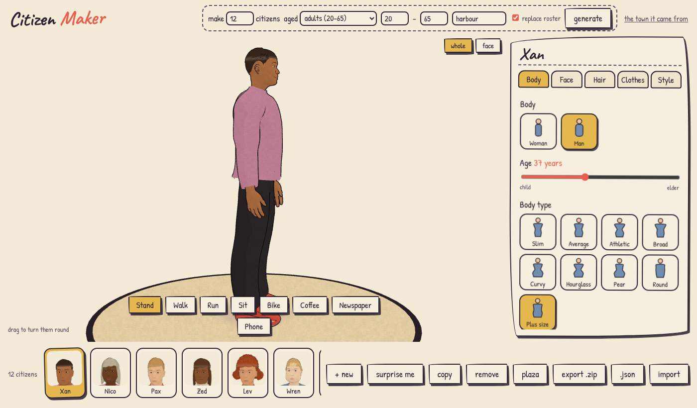
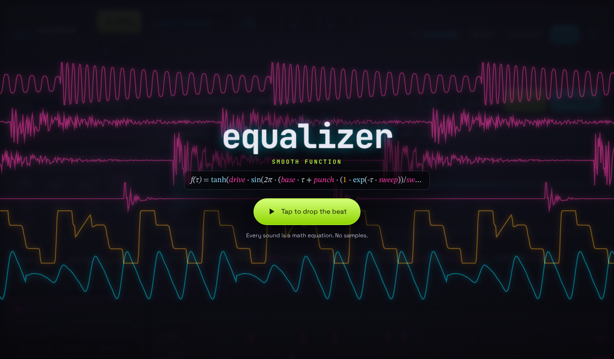
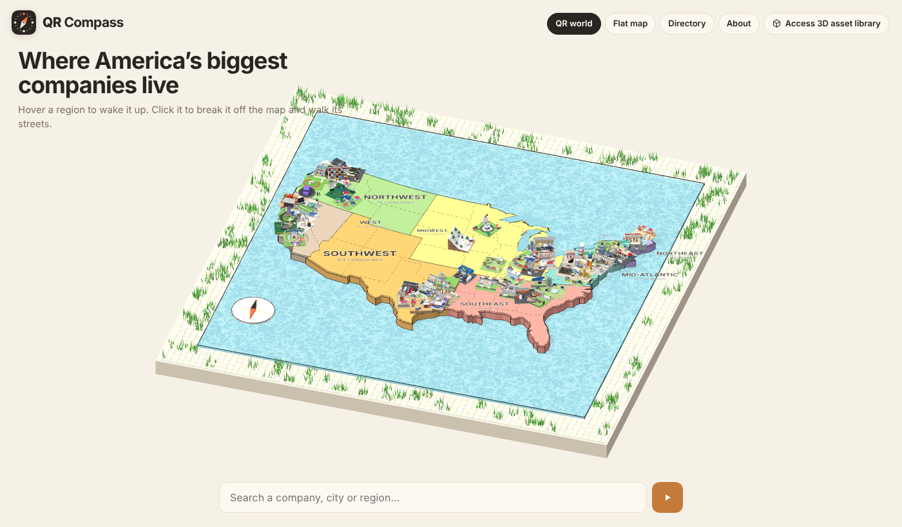
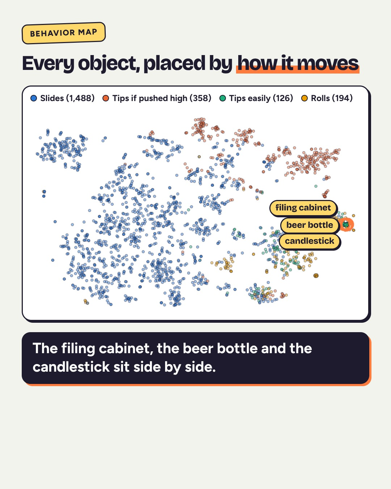

Mainframes, pacemakers and car ECUs ran for generations without a single token.
That's my bar: AI helps me make it. Nothing calls a model when you use it.
A model call at run time is a bill, a latency, and an outage on every click, forever.
A model call at build time is paid once. What it leaves behind is code that runs for free.
model calls when anyone uses the projects in this deck

Up to 200 rigged, animated people per batch, 10 drawing styles, exported as .glb. Plain three.js on GitHub Pages: no server, no API key. Built with an agent; runs on math.
Ask an LLM for 30 villagers and you get 30 new villagers each time, and a new bill.
Citizen Maker takes a seed: ?batch=30&seed=harbour makes the same crowd, every time, on any machine.
Reproducible means testable. Testable means shippable.

No samples, no generative audio. Every drum and melody is an equation you can read and edit, computed 44,100 times a second. AI helped write the synth; the synth needs no AI.
build.mjs that writes all 500 pages (QR Compass).run_all.sh that regenerates every number on a CPU (Behaviors).An answer is used once. A tool is used every day.

Every company gets a 3D model that turns into its own scannable QR code. All generated at build time from open data, then served as plain files.

Simulated pushes, ramps and drops, summarized into a searchable index. The learning happens offline on a CPU; the live demo is a lookup.
Every repo gets an AGENTS.md: how to deploy, what to check before pushing, what never to do.
"Pivot limbs at the joint." "Check all four compass angles." "Bump the cache token."
Short context, fewer retries, fewer tokens per session.
Citizen Maker's export zip carries a HANDOFF.md, a manifest and a viewer, so the next person (or agent) can drop the models into Unity, Unreal, Godot or Blender without asking anyone.
The output outlives the conversation that made it.
AI is a phenomenal builder. Most products just need what it builds.
github.com/ghanemja · ghanemja.github.io